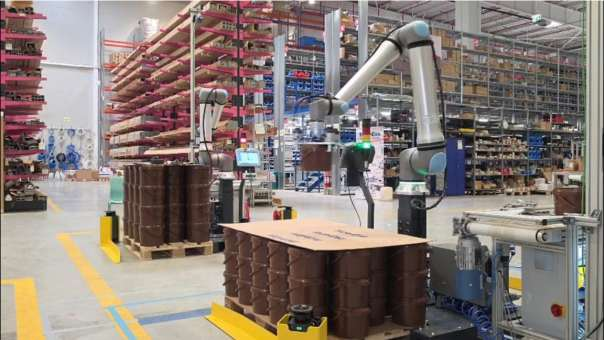

Cum funcționează celula

- umplere
- transportor
- vision mâner
- gripper
- 2 poziții de paletizare
- palet finalizat
Rămân manuale: schimbarea paleților și amplasarea separatoarelor dintre straturi.
Fapte din studiul de caz PURATOS (rezultate de test, nu garanții)
- Țintă: minimum 6 găleți/min.
- Testat: 7,4 găleți/min la 13 kg și 8,6 găleți/min la 5 kg.
- Pe palet: 100 găleți de 5 kg sau 44 găleți de 13 kg.
- Pasul 1/3Linia ta
- Pasul 2/3Rezultat
- Pasul 3/3Evaluare
Pasul 1 — Linia ta
Completați datele liniei de găleți. Câmpurile marcate cu * sunt obligatorii.
Pasul 2 — Rezultat orientativ
Pasul 3 — Solicită evaluare tehnică / demonstrație
Datele de mai jos rămân doar în acest browser (fără server). Folosiți date fictive.
Cerere înregistrată (simulat)
Panou CRM (simulat)
Lead-urile salvate local în acest browser. Nu există server sau CRM real.
Întrebări frecvente
Faptele din studiul de caz PURATOS și ipotezele noastre de lucru sunt marcate separat.
Ce face Verificatorul UR20?
Verificatorul UR20 estimează orientativ dacă linia ta de găleți (greutate 1–30 kg, debit 1–40 găleți/minut) este potrivită pentru o celulă de paletizare robotizată cu robot UR20. Rezultatul are trei stări (în limitele testate, necesită validare tehnică, nepotrivit în configurația testată) și arată numărul de celule, găleți și paleți pe schimb, masa ridicată manual și o listă de verificări pentru evaluarea tehnică.
Este un prototip demonstrativ cu date fictive, fără server și fără ofertă de preț; decizia finală se ia după evaluarea tehnică Tech-Con.
Ce rezultate a obținut celula UR20 la PURATOS?
Fapte din studiul de caz Tech-Con: PURATOS paletiza manual găleți de plastic de 5 kg și 13 kg; Tech-Con a implementat 2 celule UR20. Ținta a fost de minimum 6 găleți/minut; la test s-au obținut 7,4 găleți/minut pentru găleți de 13 kg și 8,6 găleți/minut pentru găleți de 5 kg (aproximativ 23% și 43% peste țintă). La FAT nu au fost observate preluări nereușite. Un palet are 100 de găleți de 5 kg sau 44 de găleți de 13 kg (europalet).
Aceste valori sunt rezultate de test, nu garanții pentru alte linii sau produse.
Sursă: studiul de caz PURATOS – Tech-Con, AI-Powered Business Challenge 2026.
Ce greutate de găleată acoperă verificatorul?
Fapt: UR20 are sarcină utilă nominală de 20 kg (date producător, Universal Robots), iar sarcina totală include și gripperul. Configurația testată la PURATOS a lucrat cu găleți de 5–13 kg.
Ipoteză de lucru (nu fapt): presupunem un gripper de aproximativ 5 kg, deci aproximativ 15 kg utili pentru găleată. Pragurile din verificator sunt: până la 13 kg în limitele testate, între 13 și 15 kg necesită validare tehnică, peste 15 kg este nepotrivit în configurația testată.
Sursă: date producător Universal Robots (UR20); studiul de caz PURATOS – Tech-Con.
Ce rămâne manual și ce trebuie verificat înainte de o replicare?
Fapt: în celula testată rămân manuale schimbarea paleților și amplasarea separatoarelor dintre straturi. Un robot mai rapid nu crește automat debitul fabricii; trebuie verificat blocajul din amonte și din aval.
De verificat la evaluare: greutatea, forma, materialul, mânerul și stabilitatea găleții; debitul de intrare, modelul de paletizare, separatoarele, spațiul, accesul și ritmul de schimb al paleților; evaluarea riscurilor, interacțiunea cu oamenii, igiena și procedurile; integrarea cu transportorul, semnalele de proces și pregătirea celor 2 poziții de paletizare.
Sursă: studiul de caz PURATOS – Tech-Con.
Cum sunt verificate datele introduse și ce se întâmplă cu ele?
Câmpurile lipsă sau greșite sunt marcate imediat, cu un mesaj clar: greutatea trebuie să fie între 1 și 30 kg, debitul între 1 și 40 găleți/minut, orele pe schimb între 1 și 12, iar la cererea de evaluare sunt validate numele companiei, adresa de e-mail, telefonul românesc (opțional) și consimțământul.
Datele rămân doar în browserul tău (fără server), iar cererea este simulată. Folosește date fictive, nu date personale reale.